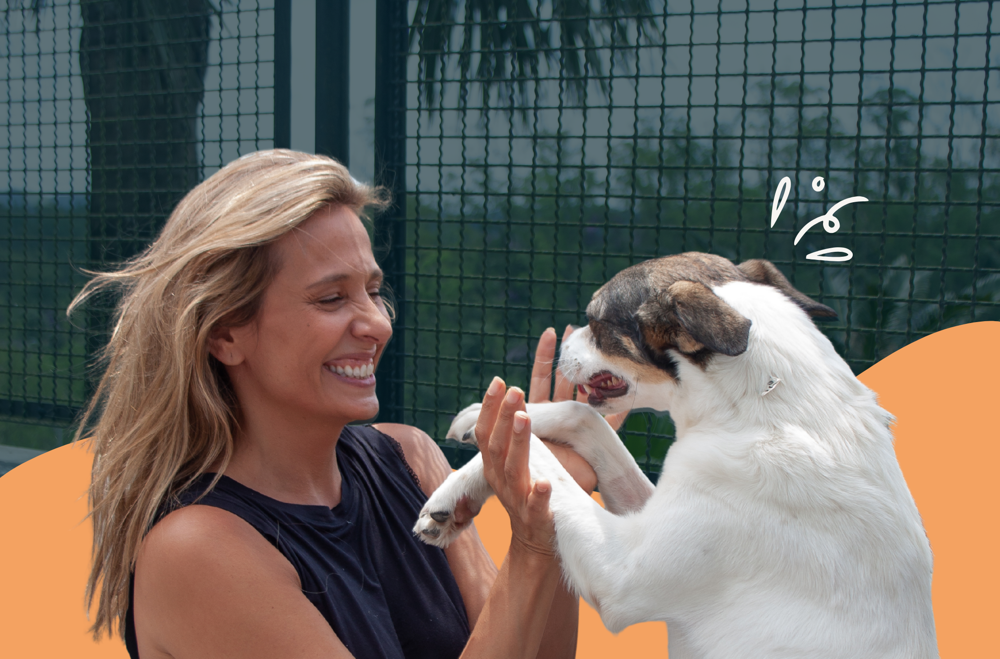

Perguntas Frequentes
1. O que é o Instituto Luisa Mell?
O Instituto Luisa Mell é uma organização não governamental (ONG) fundada em 2015 pela ativista e apresentadora Luisa Mell. Sua missão é resgatar, reabilitar e encontrar lares amorosos para animais em situação de vulnerabilidade, além de promover a conscientização sobre os direitos dos animais.
2. Como posso adotar um animal pelo instituto?
Para adotar um animal do Instituto Luisa Mell, você deve seguir estes passos:
- Acesse nossa página de adoção e conheça os animais disponíveis
- Preencha o formulário de interesse em adoção
- Aguarde o contato da nossa equipe para uma entrevista
- Realize uma visita ao abrigo para conhecer o animal
- Após aprovação, assine o termo de adoção responsável
3. Quais são os requisitos para adoção?
Para adotar um animal, você precisa:
- Ter mais de 18 anos
- Apresentar documento de identidade com foto
- Comprovar residência fixa
- Ter condições de oferecer alimentação, abrigo e cuidados veterinários
- Concordar com visitas de acompanhamento pós-adoção
4. Como posso ajudar o instituto?
Existem diversas formas de ajudar o Instituto Luisa Mell:
- Doação financeira: contribuições únicas ou mensais para manter nossos resgates e cuidados
- Apadrinhamento: adote um animal à distância e ajude a custear seus cuidados
- Voluntariado: doe seu tempo e habilidades para nossa causa
- Divulgação: compartilhe nossas campanhas e animais para adoção
- Doação de itens: ração, medicamentos, cobertores e outros materiais
5. O instituto resgata animais de grande porte?
Sim! O Instituto Luisa Mell resgata animais de todos os portes, incluindo cavalos, bois, porcos, burros e outros animais de grande porte que estejam em situação de maus-tratos ou abandono. Contamos com estrutura e parcerias para acolher e cuidar desses animais.
6. Como denunciar maus-tratos ou pedir ajuda para um animal em risco?
Você pode denunciar maus-tratos através da nossa página "Denunciar" aqui no site. Preencha o formulário com o máximo de informações possíveis, incluindo:
- Endereço completo do local
- Descrição detalhada da situação
- Fotos ou vídeos como prova (se possível)
- Seus dados de contato para acompanhamento
Todas as denúncias são tratadas com total sigilo.
7. Como o instituto utiliza as doações recebidas?
100% das doações são utilizadas para o bem-estar dos animais:
- Alimentação e ração de qualidade
- Vacinas e vermífugos
- Medicamentos e tratamentos veterinários
- Cirurgias e procedimentos de emergência
- Manutenção do abrigo e infraestrutura
- Operações de resgate
Você pode conferir nossa prestação de contas detalhada na página de Transparência.
8. O instituto atua apenas em São Paulo?
Embora nossa sede esteja localizada em São Paulo, o Instituto Luisa Mell atua em todo o território nacional quando há casos graves de maus-tratos ou situações de emergência. Também mantemos parcerias com organizações de proteção animal em outras regiões do Brasil.
9. Como posso ser um voluntário?
Para ser voluntário, basta preencher nosso formulário de cadastro na página "Ser Voluntário". Nossa equipe entrará em contato para explicar as oportunidades disponíveis e agendar um treinamento. Você pode atuar em diversas áreas:
- Resgates e acolhimento de animais
- Apoio na clínica veterinária
- Eventos e feiras de adoção
- Comunicação e redes sociais
- Atividades administrativas (presenciais ou remotas)
10. O Instituto Luisa Mell acabou?
Não! O Instituto Luisa Mell está mais ativo do que nunca. Continuamos nossa missão de resgatar, reabilitar e encontrar lares para animais em situação de vulnerabilidade. Acompanhe nossas redes sociais oficiais para ver nosso trabalho diário!
11. O CNPJ do Instituto mudou?
Para informações atualizadas sobre nossos dados cadastrais e CNPJ, consulte nossa página de Transparência ou entre em contato diretamente conosco. Sempre verifique se está doando para os canais oficiais do Instituto.
12. Qual é o Instagram oficial do Instituto Luisa Mell?
Nosso Instagram oficial é @institutoluisamelloficial. Cuidado com perfis falsos! Sempre verifique o selo de verificação e os links oficiais antes de interagir ou fazer doações.
13. O Instituto Luisa Mell faz parcerias?
Sim! O Instituto Luisa Mell está aberto a parcerias com empresas, organizações e pessoas que compartilham nossa missão de proteger os animais. Se você ou sua empresa deseja se tornar um parceiro, entre em contato conosco através do e-mail ou formulário de contato.
Nenhum resultado encontrado
Não encontramos perguntas relacionadas à sua busca. Tente usar outras palavras ou entre em contato conosco.